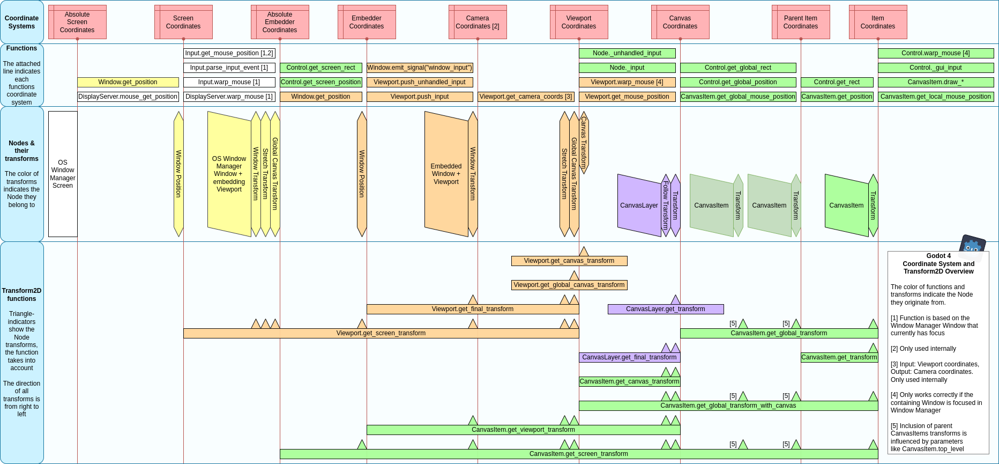
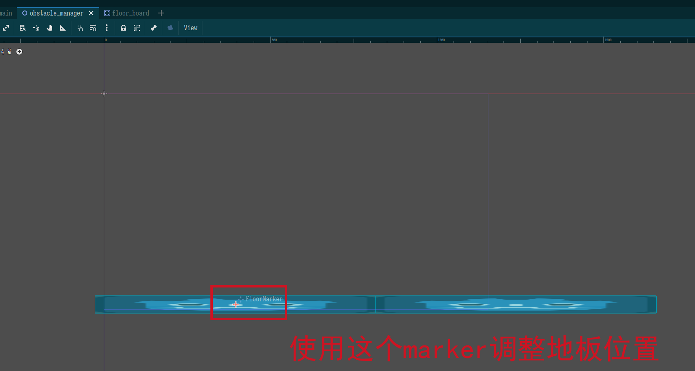
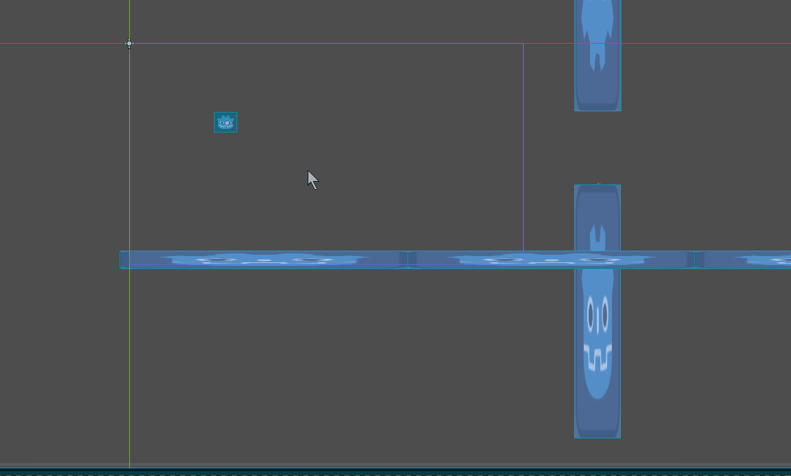

Godot 实战 01_1 FlappyBird
模仿https://flappybird.io/，素材尝试自己画。
这个比较简单，很明显可以分步实现：
- 实现鸟的逻辑——x 轴速度恒定，y 轴上受重力，按空格时进行跳跃，这时候完全重置 y 轴上的速度。
- 实现镜头跟随鸟的横坐标动（恐怕 Camera2D 直接就有这个功能）
- 实现地板，碰到就失败
- 实现管道，碰到就失败
- 实现重置
- 实现 GUI，记分
- 实现开始菜单鸟的上下浮动动画
- 实现视差背景
- 实现记分板（持久化数据）
- 处理浮点数精度问题（因为我……）
这里实现 1-4。
鸟
首先是鸟，一个问题——这鸟要使用哪个碰撞体？使用 RigidBody 的话，重力就免费地得到了，但是跳跃就相对不好写，需要使用_integrate_forces回调，CharacterBody2D 则需要手动实现重力，但跳跃好写。先考虑使用 CharacterBody2D。
实际上，哈哈哈，CharacterBody2D 的模板代码里就包含重力了，照着它的代码改一改。注意——CharacterBody2D 不被物理系统移动，它通过move_xxx方法自己执行自己的移动。
这里预先配置了空格和鼠标左键到动作 jump 上。后面的代码块为了利用上高亮，使用 go 语言的高亮，注释使用 # // 的形式，使得能够正常显示注释同时符合 GD 的语法
1 | |
这里同样有一个抉择——是让鸟向右移动，还是让障碍物向左移动？鸟向右移动的话，实现会更容易一些，但坐标太大时会有浮点数精度问题和溢出问题，障碍物来移动的话，代码实现就不是那么显然了。这里让鸟向右移动，因为它更直观，更复杂的横版游戏也都是如此做的（只能说现在不是那种几个字节都得抠抠搜搜的时代了，哈哈哈）。
有一个解决方案是在全局坐标达到特定大小后，把所有对象的坐标都减去一个固定值，从而避免坐标无限增长。这个的性能按理说是比较高效的——这样永远循环的游戏，同屏的对象数量按理说不会多。如果真的遇到问题……那就再说嘛，不要杞人忧天。
上面说的全局坐标是 global_position，这个坐标指的是 canvas 坐标——即往上反向仿射变换直到遇到 CanvasLayer 或 Viewport 时的坐标，这个坐标不一定是 Viewport 坐标（即相对于操作系统窗口内容左上角的坐标）
1 | |

镜头
镜头该不该属于主角？这是一个问题。镜头如果属于主角的话，主角将始终处在镜头的特定位置，某些游戏适合使用这种方式，但像 Flappy Bird 这样的游戏，镜头只跟随主角的 X 轴，Y 轴是不跟随的，这时候让镜头属于主角反而实现起来更蛋疼。所以这里让镜头和主角独立。
这里因为没有镜头滚转的需求，所以直接设置镜头的 Anchor Mode 为 Fixed Top Left，这时候镜头的位置为(0, 0)时镜头正好覆盖 viewport，不需要调整镜头的 y 轴高度。这里记住鸟的初始 x 坐标，得到它和 viewport 的比例，并保持该比例，从而保持鸟始终处在镜头的特定 x 轴方向。
给 Camera 添加脚本，给 Bird 添加了 uniqueName 所以可以直接访问。Camera 要放到 Bird 后面初始化，不然就不能在 ready 时得到 Bird 了，
这里，Camera 依赖了自己的兄弟节点 Bird，这是可以的，而且它们在树中的顺序也不需要控制——在 Camera 执行_ready 时，Bird 的_init 已经被执行了，所以可以获取到实例，只是这时候 Bird 不一定_ready 被执行过。也就是说：
- Scene 树的同一层中，先从上到下执行
_init _init执行完后，再从上到下执行_ready（其中，每一个 Node 中，@onready在_ready更早执行），这保证_ready时可以获取兄弟节点的实例
如果我要依赖兄弟节点的 ready 怎么办？节点 ready 时，会 emit ready 信号，await 它即可。下面的脚本就使用了这一点，但必须要检查 bird 是否已经 ready——await 一个之前 emit 的信号是行不通的，这不是 js
1 | |
这里直接把镜头和鸟的初始位置给耦合了……这是咬定了游戏 title 界面和游玩时鸟的 x 坐标都是这个位置来的，
地板
关于地板，其实最复杂的问题是，怎么去实现一个无限长的地板？最佳实践应该是使用 TileMap，但还没学，下一步再去学，这里玩玩土方法。
实际上我们不需要实现无限长——只需要动态生成后面一段长度的就好了，然后前面的不可见的部分就给它扔掉（或者移到前面去重用），总之不能搞出内存泄漏。我们知道 VisibleScreenNotifier 可以做这个工作。
这里同时也得准备一个前后完全连续的地板纹理，这里 krita 可以完成它。但先不考虑纹理，把功能整出来先。
这里因为地板和管道均是动态生成的，这里得新抽象一个类 ObstacleManager 用来控制该操作。ObstacleManager 可以给它注入地板和管道的纹理。
ObstacleManager，它需要依赖鸟或者镜头的位置才能工作，这里有几种想法：
- ObstacleManager 直接在代码中依赖鸟或镜头，根据它们的位置去做操作，这会导致它无法独立调试
- ObstacleManager 中通过编辑器注入鸟或镜头的节点以解耦，编辑器能够注入任意节点给它，从而调试相对方便
- ObstacleManager 直接暴露生成管道、地板的方法供 Main 去使用，这个 debug 相对方便，但会更耦合一些
- ObstacleManager 监听一个位置改变的信号，在回调中进行操作，这个绑定在编辑器中做，或者在 Main 中做，它有职责做这个操作。
关于这里的信号驱动我还是觉得很怪——作为发布者，我虽然不知道有谁接受这个信号，但是我得知道这个信号是谁的什么信号，这同样是一种依赖。倒也有解决方案——使用 Autoload 去定义全局的信号。
在这样一个小项目中，使用哪种方式都行，在考虑这种关于依赖管理和耦合的事情的时候，先不说别的，扪心自问——这里在将来会扩展吗？倘若我将来不做扩展，这里又有何做解耦的必要？
在研究了半个下午后，决定使用第二种方式，编辑器注入参考节点去解耦，然后反复检查它的位置。
然后是下一个问题——关于地板的定义，地板因为它既有图像，也有碰撞箱，所以它必须得是 Scene。它要参与物理运算，所以给它一个 StaticBody2D 作为 root。
这时候有个问题——如何处理地板的生成？先明确需求：
- 我要能可视化地调整地板的大小，位置，材质等
- 我要能够在运行时得到地板的大小，不然我无法横向扩展
- 地板要有一个符合尺寸的碰撞箱
首先关于可视化，我可以使用 tool 标注障碍物管理器，然后使用一个 marker 标注参考地板的位置。
这里有三个选项：
- export 一个 Texture2D（即传入材质），我来动态地构造 Sprite2D 和 StaticBody2D（在这里其实不需要它，只需要 CollisionShape2D）
- export 一个 Sprite2D（即传入材质，大小），我来复制它，并给它提供 CollisionShape2D
- export 一个 PackedScene（传入除位置以外的一切东西，包括碰撞箱），我来实例化它
它们都有优缺点：
- 第一个选项，支持可视化地分别配置材质，高度，缩放等信息，但需要手动构造 CollisionShape
- 第二个选项，和第一个选项类似，但有个缺点——我得处理掉这原来的 Sprite2D，或者至少让它不可见
- 第三个选项，它看上去很香，但要求这个 Scene 要定义 get_size 方法并返回一个 Vector2 表示它的大小
- 这其实一般来说是可以接受的，但是有个问题——这个 scene 也得标注成 tool 脚本，不然没法使用脚本里定义的 get_size 方法，我不希望 tool 被到处扩散
但这里其实也完全可以内聚——地板只会被 ObstacleManager 使用，ObstacleManager 完全可以和地板强耦合而不另外传入，而我就决定这么干了，管道也这么干！
这里最终是选择第三种，但是不 export 了，直接用 preload 引入，同时使用 marker 去标注位置，同时让地板 scene 也是 tool，这或许不优雅，但我不想再在这里折腾下去了。
下面是无限地板的完整实现，这里让地板的初始值足够长，长到两三个屏幕左右，然后在旧地板完全离开屏幕的时候（通过 VisibleOnScreenNotifier2D）去移除旧地板，并在尾部添加新地板，如此便能够实现无限的地板。
1 | |

做到这里我突然感觉，其实镜头啊根本都不需要，我还是让障碍物左移反而写起来更加顺滑一些 hhh，现在这样反而更难处理浮点数精度问题。后面再考虑。
注意到因为上面直接在地板离开屏幕时产生新地板，这样就直接和
管道
实现管道就和地板一样，和 ObstacleManager 强耦合。
管道同样用 Scene 定义（已经都快习惯了，到处都是 Scene），为了后续安排方便，管道只定义一边，但允许配置可翻转；管道 Scene 的中心不设置成管道图像的中心，而是管道图像顶部中心，以方便被安排位置。管道图像要足够长。
同时这里也注意到，地板和管道生成的逻辑是不一样的，这里使用同一个 ObstacleManager 生成它们不太合理，所以这里做一下区分，区分为 FloorManager 和 PipeManager。
这里就有个问题——pipe 的生成条件是什么？我啥时候开始生成？第一次生成的位置是哪里？
在这里我脑子里走了个歪路——我想暴露一个 signal start_generate_pipe，然后监听这个 signal，被 emit 就开始生成；但这是不对的——
信号机制，从发出信号的人来看，用来表示告诉外界我发生了什么；从监听信号的人来看，是我对什么事件感兴趣。为此，clieked，game_overed，hitted 是合适的信号（只是这么举例子，实际命名的时候有时候不是这样的被动语态，虽然是很推荐这样），而start_game，clear_the_screen则是不合适的，这时候应当是直接方法调用。
为此，应该做的应该是在顶层做一个 game_start signal，然后让管道监听这个 signal 去执行操作。
但我不这么做，我要和地板一样——预先生成一系列管道（同样要跨越两三个屏幕那么远），然后在旧的管道离开屏幕后添加新的。
管道的实现比地板反而更简单——管道不需要无缝相连，所以不需要得到管道的大小，只需要通过配置调整合适的管道的距离罢了。
但是我已经开始恼火后面怎么重启游戏了 hh
管道是上下两个的……所以离开窗口时是离开两次才创建一对新的，这个好解决。
我希望下一个实战我能写得更痛快一些……
这里有个地方值得记录一下，关于上下管道的位置的算法；这里规定上下管道之间的距离的范围在 MINIMAL_INTERVAL 到 MAXIMAL_INTERVAL，计算出要的 interval，然后去计算管道的中心的高度，得到它再根据 interval 就能得到上下管道的位置。
1 | |
整个的代码是这样：
1 | |

到这里……突然不想学了，换换口味去。
本博客所有文章除特别声明外，均采用 CC BY-NC-SA 4.0 协议 ，转载请注明出处！